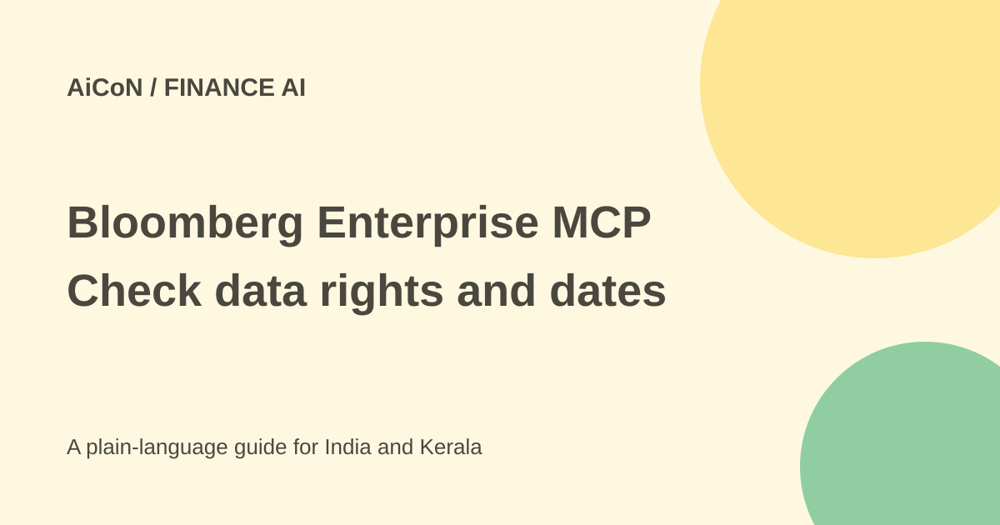

Bloomberg Enterprise MCP: licensed data still needs context
Enterprise MCP lets approved AI workflows retrieve licensed Bloomberg data. It is an enterprise data connection, not free market data or permission for an agent to make trades.

What is Bloomberg Enterprise MCP?
Bloomberg announced Enterprise Model Context Protocol on 29 September 2026 as an AI access layer for Data License Plus. MCP is a standard connection format for giving compatible agents access to external data and tools.
The product helps discover securities, map fields to their meanings and retrieve licensed data. It is built for organisations using Bloomberg Data License rights. A consumer chat subscription or a Bloomberg Terminal account should not be assumed to include this enterprise service.
Access, cost and a count conflict
The checked route is enterprise licensing. Bloomberg says clients can license specific content domains under standard Data License rights. No universal public per-user price or free personal plan was established. An Indian firm should confirm its contract, content entitlements, intended AI use and redistribution rights before connecting an agent.
The September launch release says more than 100 million securities and over 50,000 fields. The current Data License Plus product page says more than 100 million securities and over 30,000 fields. This guide preserves that difference rather than pretending the counts agree. Ask Bloomberg which catalog and licensed domains apply to your account.
A large field count does not mean every field is included in a contract or suitable for a particular investment question. The release says entitlements are checked before data is returned and calls have limits on securities and fields.
How to plan a controlled pilot
- Have the authorised data-licensing team confirm Enterprise MCP access and allowed AI uses.
- Choose a read-only workflow, such as comparing a known set of reference records, before trying consequential automation.
- Define the exact securities, identifiers, fields, currencies and as-of dates you need.
- Use the official integration route and limit credentials to those licensed datasets and workflows.
- Compare returned values with a known Bloomberg source. Check whether prices are current, previous-day or historical.
- Inspect definitions, calculation methods, adjustment status and source metadata, not only the numerical answer.
- Keep audit evidence and a human review step for decisions. Confirm costs and data-sharing rules before expanding the pilot.
Why financial metadata matters
A price can have a different meaning depending on currency, timing and corporate-action adjustments. An earnings estimate is not the same as a reported result. A credit rating may refer to an issuer or to a particular instrument. The connection protocol does not decide these meanings for you.
Bloomberg's technical discussion says the context should be explicit in metadata and enforced in the workflow rather than guessed by the model. Its exemplar workflow Skills can reduce repeated reasoning, but they do not remove the need to verify the financial question and output.
Roadmap is not current access
A July Bloomberg article described an initial scope including reference data, fundamentals, estimates, ownership and previous-day pricing, with later real-time and historical capabilities on a roadmap. The newer launch and product pages describe broader delivery through DL+ Live and Qube Datastore. Confirm current availability for the specific dataset instead of repeating the older roadmap or treating the newer general description as an entitlement.
This guide did not connect to licensed data, test a trading system or inspect a customer's contract. It gives no investment advice. A data tool must not be allowed to change a portfolio merely because it can retrieve market information.
For Indian financial teams
Use a local compliance and data-governance review for the exact workflow, especially if information may leave approved systems or be shared with a model provider. Confirm timestamps, timezones, exchange coverage and permitted recipients. An accurate number used at the wrong time or outside its licence can still create a problem.
What changed since the original post?
The 29 September post emphasised contextual data and 50,000 fields. This guide adds the current product page's conflicting 30,000 figure, contract-specific access, request limits and the difference between data retrieval and permission to act.
Frequently asked questions
Is this free for individuals?
No free personal route was established. It is an enterprise licensed offering.
Does MCP guarantee correct interpretation?
No. Meaning depends on metadata and the chosen workflow.
Are all fields available to every client?
No. Entitlements and licensed content domains apply.
Were trades or licensed queries made?
No. This guide uses public sources only.
Sources: Current Data License Plus page · Bloomberg launch release · Metadata and earlier scope. Checked 7 October 2026.